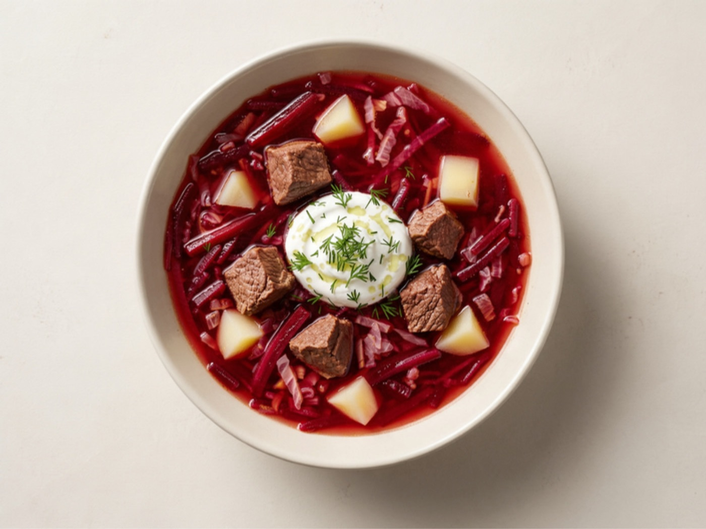

Обіди · № 021
Український борщ
2 годчас
8порції
11інгредієнтів
КБЖВ · ПП-версіяна порцію
183ккал
16 гбілки
4 гжири
22 гвуглеводи
Класична версія: 246 ккал · Ж 13 г → тут на 26% менше калорій
Уся страва: 1975 г · 1461 ккал · білки 128 г · жири 31 г · вуглеводи 173 г
На 100 г: 74 ккал · білки 6 г · жири 2 г · вуглеводи 9 гІнгредієнти11
Приготування5 кроки
- Залийте м’ясо 3 л води, варіть до м’якості, знімаючи піну (курку — 30 хв, яловичину — 1 год).
- Буряк соломкою потушкуйте з оцтом, томатною пастою й ополоником бульйону 15 хв, без олії.
- Цибулю й моркву пасеруйте на антипригарній сковороді, додаючи по ложці води замість засмажки.
- Додайте в бульйон картоплю, через 10 хв капусту, ще через 10 хв — буряк і овочі.
- Посоліть, додайте цукор, часник і лавровий лист, настоюйте 20 хв. Подавайте з грецьким йогуртом замість сметани.
КБЖВ по інгредієнтахуся страва
| Продукт | г | ккал | Б | Ж | В |
|---|---|---|---|---|---|
| Пісна яловичина | 400 | 600 | 88 | 26 | 0 |
| Картопля | 450 | 347 | 9 | 0,5 | 76,5 |
| Буряк | 400 | 172 | 6,4 | 0,8 | 38,4 |
| Грецький йогурт 2% | 160 | 117 | 16 | 3,2 | 5,8 |
| Капуста | 300 | 75 | 3,9 | 0,3 | 17,4 |
| Морква | 100 | 41 | 0,9 | 0,2 | 9,6 |
| Цибуля | 100 | 40 | 1,1 | 0,1 | 9,3 |
| Томатна паста | 30 | 25 | 1,3 | 0,2 | 5,7 |
| Часник | 15 | 22 | 1 | 0,1 | 5 |
| Цукор | 5 | 20 | 0 | 0 | 5 |
| Оцет | 15 | 3 | 0 | 0 | 0,1 |
| Разом · 1975 г | 1461 | 128 | 31 | 173 | |
| На 100 г | 74 | 6 | 2 | 9 | |
| На порцію | 183 | 16 | 4 | 22 |